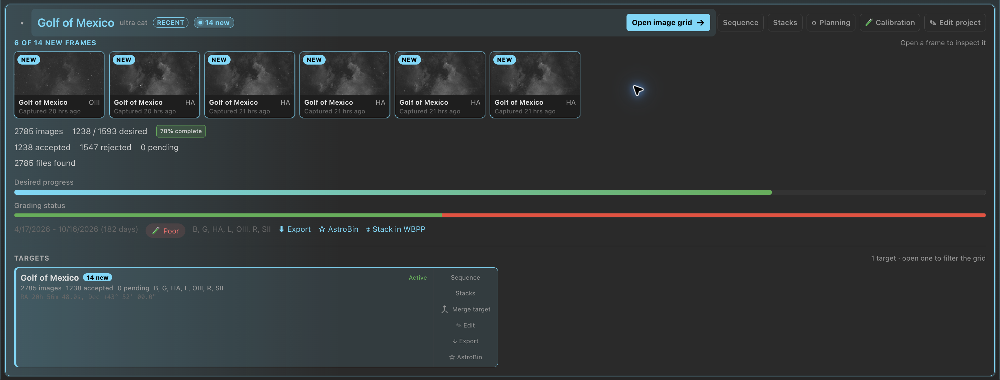
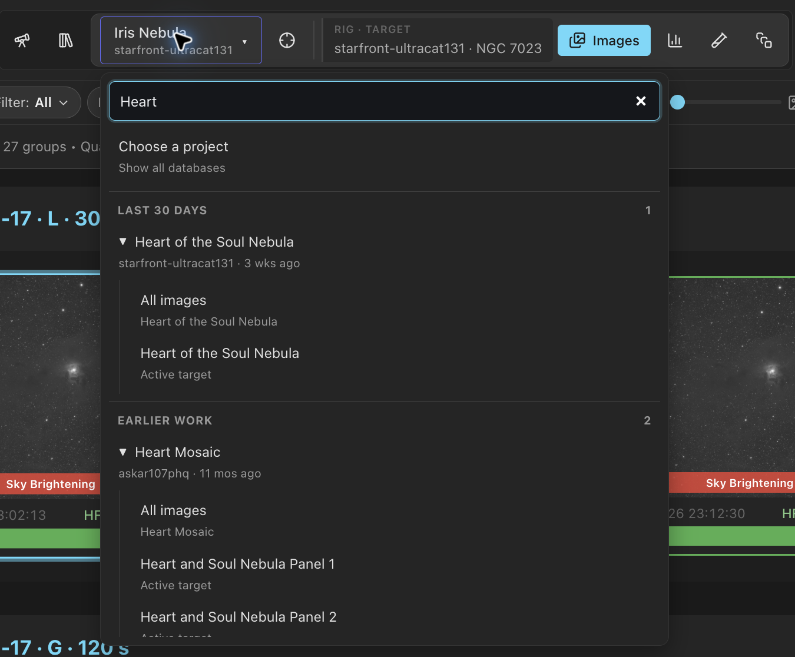
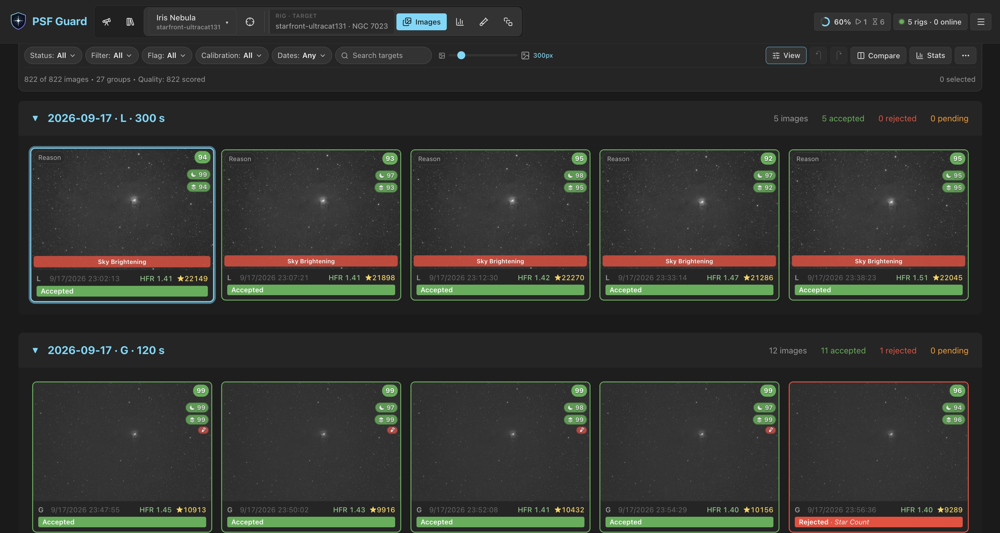
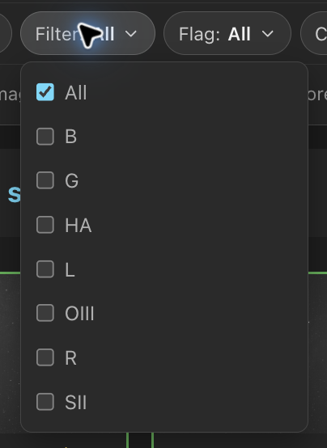
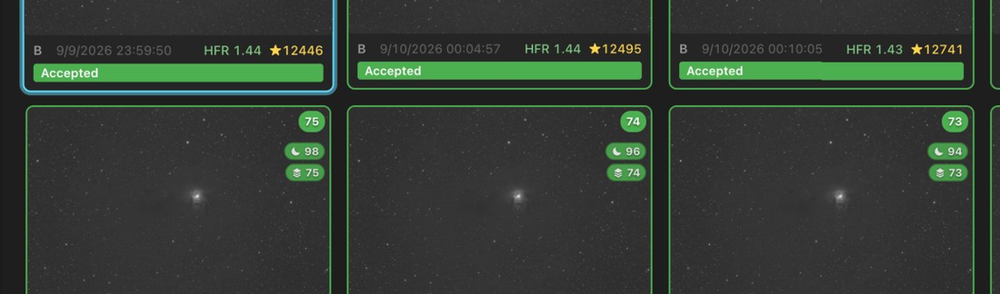
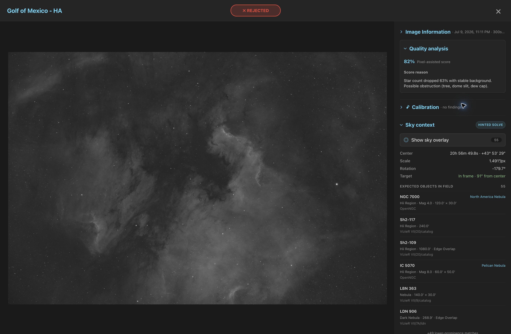
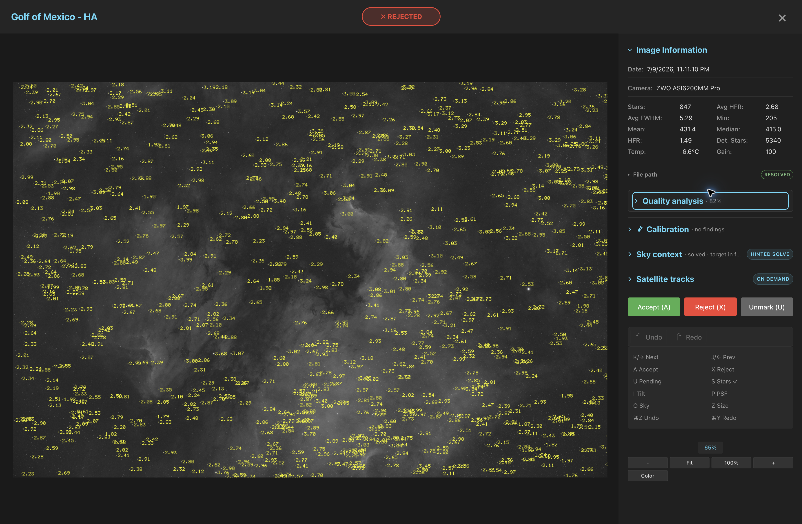
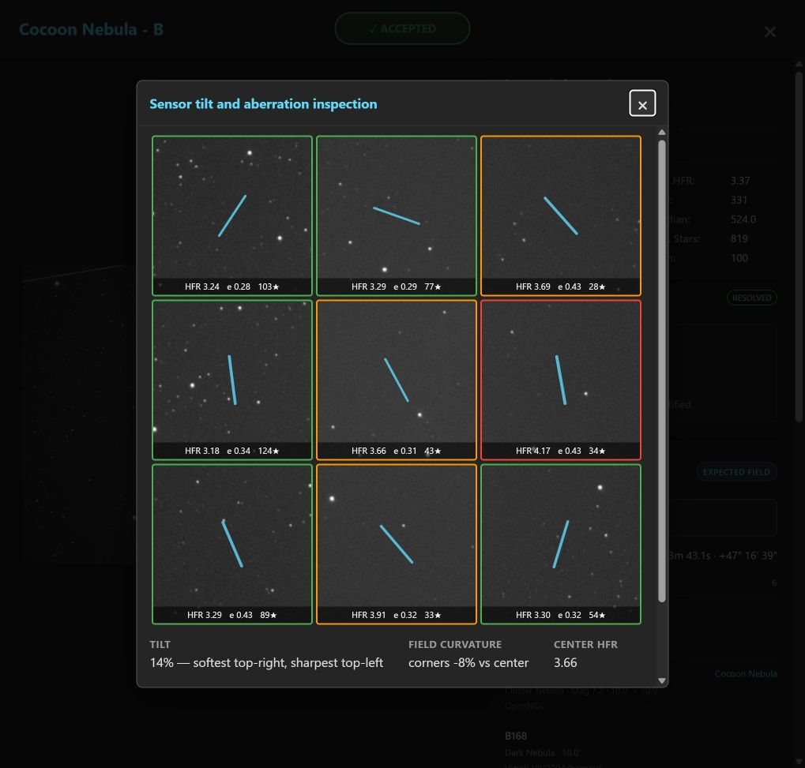

Library & Grader
Find a project in the Library, then review its frames in Images, Sequence
and Stacks. The desktop app and psf-guard server serve the same
UI. Grades go straight into the catalog, so Target Scheduler can replace
rejected frames.
The Library
The Library lists every project in every registered catalog, grouped by when it was last shot: last 7 days, last 30 days, earlier work. It uses the whole width of the window, up to 2400 px. The band at the top totals images, projects, targets, accepted frames, frames to review, missing files and grading progress.

In the compact view each project is one row, and each kind of badge has its own column: database, Target Scheduler state, accepted against desired (it reads Done once the goal is met), grade counts, capture dates and calibration. Sequence and Stacks open those views; ⚙ opens the plan's workspace. A project without a pill leaves its cell empty, so the columns stay aligned. A long name ends in "…" and shows in full on hover. A badge beside the name counts frames new since you last opened the project.
On laptop and wider screens each row stays on one line, and the dates say how long ago the last frame was, with the range in the tooltip. On a tablet a row takes two or three lines. On a phone, the badges stack inside a rounded box.
- Compact and Detailed switch the whole list. The arrow at a row's left opens it into its full card, and folds it back. The project you came from opens as a card. Set the default under Settings → Review → Library.
- The Projects toolbar uses the pills Images and Sequence use, and wraps into rows on a narrow window. Show narrows to Active, Still to shoot, Done, Draft, Inactive, Closed, Calibration issues or, for plans with none, No database. The search box matches project and target names. Both stay in the address. Sort orders projects within each group: Newest first, Name A–Z or Most images.
- For an editor, the state pill is a menu with its caret inside. Choose Active, Inactive, Draft or Closed; PSF Guard asks first, then writes the state into the project in Target Scheduler, which acts on it from its next pick.
- A plan shot by several rigs is one outer pill, N rigs, with a row per rig under it.

Calibration pills
A 🧪 Poor or 🧪 Check pill marks a project whose lights have calibration issues: Poor when some lights can't be calibrated properly, Check when something is worth a look. Causes include lights with no calibration frames to match, thin dark masters, flats with changing spots, old or mixed flats, and suspect frames in use. A background check works it out. The pill opens the project's Calibration report, and Show › Calibration issues lists only these projects. See Calibration Libraries.
The header
The header shows each view as an icon. The current view keeps its name; rest the pointer on another, or move focus to it, and its name slides out. Sky comes first, since it covers all projects and databases, then Library. The remaining controls follow the project and database scope: the project picker, Planning for that project's plan, the rig and target switcher, then Images, Sequence, Calibration and Stacks. Images, Sequence and Stacks become available when you pick a project or database.
At the right sit the jobs chip and one menu button, ☰, holding Settings, Keyboard shortcuts, Server information and Sign out. On a server with accounts the menu says who is signed in, and only an editor sees Settings.


- A project shot by several rigs is one row in the picker, badged with its rig count. Its switcher lists each rig with its targets.
- The switcher fits long target names. Mosaic panels show the part that sets them apart, such as Panel 2, with the full name as a tooltip.
- Calibration shows the calibration library of the database in scope. With a project in scope it opens on that project's rig and shows the calibration that project uses; there the switcher names the rig only. See Calibration Libraries.
- The jobs chip counts running, waiting and queued work, and work that needs you, with a small icon each. Its list splits into Started by you and Automatic. Click a job to open what it works on. See Storage & Performance.
- Once a rig runs the N.I.N.A. Director plugin, an early beta, a chip such as 2 rigs · 1 exposing counts those rigs and opens Live on the Sky.
Images

The toolbar
Images, Sequence and the Calibration page share one compact toolbar. Its first row holds the filter pills, the thumbnail size slider and the tools. A pill names its filter and its value, such as Status: All. View holds the display settings, and ⋯ less-used tools. A slim row below gives the counts. On a phone the filters and the slider fold behind a Filters button that counts the filters in use.
- Status, Filter, Flag and Calibration open checkbox lists: Ha and OIII together, or frames with any of two flags. Dates and the search box narrow further; Clear drops every filter.
- View holds Group (filter, session, date, or filter and date; project first when Images shows every project), Sort, Marks, Nights end, Chips and Separate exposure groups. The button names a setting that is off its default, such as newest first.
- The tools are undo and redo, Compare, Stats, which opens image statistics under the toolbar, and the quality scan.
- For an editor, ⋯ holds Move exposures, which splits frames into another target or project (see Organize projects and targets), and Rescan image folders, which replaces the header's reload button (see Files copied in by hand).
- Select with Shift+Click, Ctrl/Cmd+Click, or arrow keys and Space; Shift with an arrow extends the selection. Once two images are selected, the slim row offers Accept, Reject, Pending and Stack selected, and Flat side… for flat choices.

Newest first and new frames
View › Sort › Newest first turns each group around, and in
Sequence the strip and its session tabs; the score chart keeps time left to right.
The arrow keys, Shift-click, the detail view's next and previous, and Compare follow
the order on screen. A project's exposure groups keep their order, so they do not
trade places as frames arrive. The address keeps the choice as
order=newest, and it becomes the default for links that name no
order.
Frames captured since you last opened the project from the Library carry a small dot before their date, in Images and Sequence: the frames the Library's "new" badge counted, plus any captured since. They keep it until you next open the project from the Library.
Night and hour marks
Images and Sequence mark where frames cross into another night or hour. A line and the night's date sit in the gap before a night's first frame, every other night takes a faint band, and thinner lines mark the hours when frames are dense enough for them to help. No card moves for a mark. View › Marks sets Nights and hours, Nights only or Off, as does Settings → Review.
Nights split at each rig's local noon, not at midnight. A light finds its rig through its Target Scheduler profile, so lights a western rig shoots after midnight UTC stay on the night they began. Date groups are these observing nights, and the detail view's next and previous walk the same nights. Nights end under Settings → Calibration can put every light on one split with Same time for all rigs; Nights end in the View panel shows the other split in one view.
Cards
- Cards take the shape of the frame, read once per camera setup from one frame's header, so a square or 4:3 sensor fills its card as a 3:2 one does. Sequence spaces its cards as Images does.
- Images and Sequence each keep their own thumbnail size.
- Cards show the target only when the grid mixes targets. A frame from this year shows its time; an older one shows its year.
- Previews load small first and fill in on zoom. Cards far off screen are not drawn, so a grid of thousands scrolls smoothly.
Chips and view settings
Each card's main badge is its quality score. Two chips rank it further: the moon chip within its night, the stacked-layers chip against every comparable frame of the target and filter. A 🧪 chip marks a light the calibration library serves poorly, red for Poor and yellow for Check, and opens the light on its Calibration panel. The Calibration pill in Images keeps only such lights, and Sequence's Select offers Poor calibration. See Calibration Libraries.

Toggle each chip under View › Chips or in Settings → Review, which also sets whether a grade moves to the next image. Hold Shift with A, X or U to invert that once. Sequence's scoring defaults sit under Settings → Review → Sequence scoring; see Quality Screening.
Signed in to a server with user accounts, your view choices follow you to any browser: the sort order, the grouping, the thumbnail sizes, the chips, the Library's rows and the project picker's grouping. Settings in a link override your saved choices. Each change saves only what it changed, so a tab left open does not undo a choice made since on another device. Without accounts, and in the desktop app, the browser keeps them.
Image detail
Press Enter or double-click a card. Panels beside the frame give Image Information (statistics and the resolved file path), Quality analysis (the score and its reason), Calibration, Sky context from the plate solve, and Satellite tracks.

- Click a panel's title to fold or open it. A folded panel keeps one line, such as the quality score, whether the field solved, or the calibration findings by name. Each stays as you left it from image to image and after a reload.
- Calibration opens on its own only for a light with a Poor or Check finding, or when you came from the 🧪 chip or from Images filtered by calibration. Folded on a light with no findings, it reads "no findings". Open or fold it by hand, and that choice holds for every light.
- The arrow keys keep the sidebar on the panel you were reading as you move between images.
- On a phone the image takes the frame's shape: a landscape frame spans the width with no black band above and below, and a portrait frame stops at 60% of the height.
When the catalog holds a frame's calibrated or registered copies from WBPP, Siril, ASTAP or DeepSkyStacker, V or the buttons beside the image switch between them. Previews, star markers and the PSF view follow. Grid cards mark frames that have copies. See Calibrated copies.
Star overlay and HFR
Press S for the star overlay: each detection circled and labeled with its HFR. Detection uses the frame's focal length and pixel size when both headers exist, so wide fields keep small stars. P shows the PSF fit.

Sensor tilt inspector
Press I for nine 1:1 crops in a 3×3 grid, each with its median HFR, eccentricity and star count, a border colored by softness, and a line for the mean elongation. The summary gives tilt, field curvature and center HFR. A soft edge opposite a sharp one suggests tilt; soft corners round a sharp center suggest curvature; one elongation everywhere suggests guiding or wind. Check several frames: seeing can mimic all three.

Sky context
The panel lists catalog objects expected in the field. O solves a frame with no fresh solve, or toggles the sky overlay: labels, outlines, an RA/Dec grid, the pixel scale and the target offset. The overlay stays as you last left it. See Sky Context & Solver.
Compare
Press C in the grid to put two frames side by side, with zoom and pan linked or apart. Grade both at once.

Sequence
Sequence scores a target's frames in capture order, one session or all sessions per filter. The chart shows each score, with a dot under each bar for the frame's grade; the scatter shows each solved center against the target; each card gives the cause of a low score. It shares the toolbar, the arrow keys and Space with Images, adds a Select pill for selection rules, and offers Review rejection for a selection. See Quality Screening.
Where one target and filter hold frames from two or more Target Scheduler profiles, Sequence scoring and statistical grading compare each profile with itself, so two rigs merged into one catalog are not scored against each other. The profile stands for the rig, so one rig kept under two N.I.N.A. profiles scores as two. See Scores and causes.

A mosaic as one view
When a project's targets form one mosaic, the switcher offers it as one choice, such as Heart Mosaic mosaic (4 panels). Images groups frames under each panel in grid order. Sequence shows every panel's frames in capture order. Stacks lays each panel's stack out as the grid and on the sky. Grading and stacking stay per panel.

Keyboard shortcuts
| Key | Action | Key | Action |
|---|---|---|---|
| K / → | Next image | A | Accept |
| J / ← | Previous image | X | Reject |
| ↑ / ↓ | Grid row up or down | U | Unmark |
| Space | Toggle selection | Shift + A / X / U | Invert grade advance once |
| Shift + arrow | Extend selection | C | Compare (grid); color (detail) |
| Enter | Open image | Esc | Clear or close |
| S | Star overlay | P | PSF view |
| I | Tilt inspector | O | Solve or sky overlay |
| T | Satellite tracks | V | Calibrated copies |
| + / − | Zoom | 0 / 1 / F | Reset, 100%, fit |
| Z | Image size | Ctrl+Z / Ctrl+Y | Undo / redo |
| G | Change grid grouping | ? | Shortcut help |
In Images, Enter and Space on a focused toolbar button, such as View, press that button only; they do not open or select the current image. Keyboard shortcuts in the header's menu, or ?, lists the keys.
Where grades go
Every grade sets gradingStatus in the active catalog, with undo and
redo. Catalogs PSF Guard creates use the Target Scheduler layout. On a live Target
Scheduler database, the scheduler counts accepted frames against each exposure plan
and shoots replacements for rejected ones.